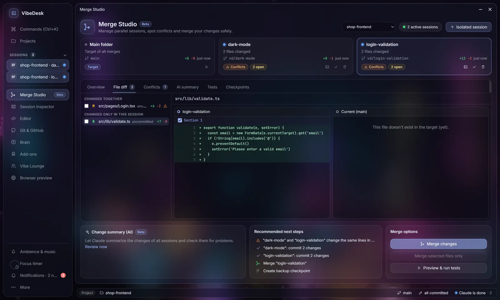

VibeDesk/Merge StudioBeta
Parallel sessions, merged safely.
Let two or three Claude sessions work at the same time without stepping on each other. Each gets its own Git worktree; Merge Studio shows what they changed, predicts conflicts before anything is touched and always sets a checkpoint first.
Isolated sessions
Every session gets its own folder.
Start an Isolated session and Claude works in its own Git worktree on its own branch. Parallel sessions never get in each other's way until you decide to bring their work together.
- Worktrees live in
.vibedesk/worktrees/on branches namedvd/…; VibeDesk adds the folder to.git/info/excludeand leaves your.gitignorealone. - Session cards show branch, changed files, +/−, live status and a badge: ready, review or conflicts.
- Merge Studio is in the More menu – and in the dock as soon as two sessions run in parallel.

Before you merge
See the conflict before it happens.
Merge Studio runs git merge-tree against the target branch and between the sessions – even for changes that are not committed yet – without touching any file. It tells you where it would really clash.
- Compare one file side by side: session · current target · other session.
- An AI summary lists risks and recommended next steps.
- Run your tests inside the session's folder before anything is merged.

Merging
Take everything, a file, or a single hunk.
Whole branch
Bring a session's complete work into the target branch.
Selected files
Tick the files you want – the rest stays in the session.
Selected hunks
Take single sections of a file, applied with a 3-way merge.
Checkpoint first, always
Before every merge VibeDesk saves a checkpoint as a Git ref under refs/vibedesk/checkpoints – not in your history. One click restores it.
Your work is safe
Uncommitted changes in the target are never overwritten, and every risky step asks first.
Works in both layouts
Desktop with floating windows or Studio with a sidebar – Merge Studio opens as a full page there.
Let Claude work.
Step in when it counts.
Free for Windows 10 and 11.